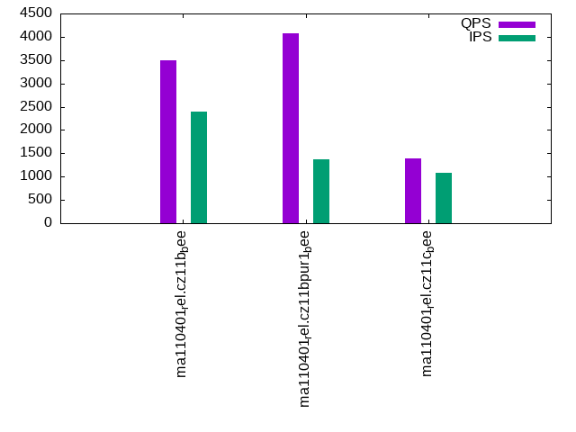

This is a report for the insert benchmark with 800M docs and 4 client(s). It is generated by scripts (bash, awk, sed) and Tufte might not be impressed. An overview of the insert benchmark is here and a short update is here. Below, by DBMS, I mean DBMS+version.config. An example is my8020.c10b40 where my means MySQL, 8020 is version 8.0.20 and c10b40 is the name for the configuration file.
The test server has 8 AMD cores, 16G RAM and an NVMe SSD. It is described here as the Beelink. The benchmark was run with 4 clients and there were 1 or 3 connections per client (1 for queries or inserts without rate limits, 1+1 for rate limited inserts+deletes). It uses 4 tables with a table per client. It loads 800M rows per table without secondary indexes, creates 3 secondary indexes per table, then inserts 2m rows per table with a delete per insert to avoid growing the table. It then does 6 read+write tests for 1800s each that do queries as fast as possible with 100,100,500,500,1000,1000 inserts/s and the same for deletes/s per client concurrent with the queries. The database is larger than memory. Clients and the DBMS share one server. The per-database configs are in the per-database subdirectories here.
The tested DBMS are:
The numbers are inserts/s for l.i0, l.i1 and l.i2, indexed docs (or rows) /s for l.x and queries/s for qr100, qp100 thru qr1000, qp1000" The values are the average rate over the entire test for inserts (IPS) and queries (QPS). The range of values for IPS and QPS is split into 3 parts: bottom 25%, middle 50%, top 25%. Values in the bottom 25% have a red background, values in the top 25% have a green background and values in the middle have no color. A gray background is used for values that can be ignored because the DBMS did not sustain the target insert rate. Red backgrounds are not used when the minimum value is within 80% of the max value.
| dbms | l.i0 | l.x | l.i1 | l.i2 | qr100 | qp100 | qr500 | qp500 | qr1000 | qp1000 |
|---|---|---|---|---|---|---|---|---|---|---|
| ma110401_rel.cz11b_bee | 247295 | 303145 | 1425 | 2162 | 14996 | 2082 | 7724 | 1202 | 3504 | 653 |
| ma110401_rel.cz11bpur1_bee | 257566 | 315582 | 1541 | 648 | 12371 | 1596 | 1744 | 400 | 4070 | 1431 |
| ma110401_rel.cz11c_bee | 235571 | 323887 | 652 | 1043 | 15272 | 1318 | 1480 | 310 | 1386 | 261 |
This table has relative throughput, throughput for the DBMS relative to the DBMS in the first line, using the absolute throughput from the previous table. Values less than 0.95 have a yellow background. Values greater than 1.05 have a blue background.
| dbms | l.i0 | l.x | l.i1 | l.i2 | qr100 | qp100 | qr500 | qp500 | qr1000 | qp1000 |
|---|---|---|---|---|---|---|---|---|---|---|
| ma110401_rel.cz11b_bee | 1.00 | 1.00 | 1.00 | 1.00 | 1.00 | 1.00 | 1.00 | 1.00 | 1.00 | 1.00 |
| ma110401_rel.cz11bpur1_bee | 1.04 | 1.04 | 1.08 | 0.30 | 0.82 | 0.77 | 0.23 | 0.33 | 1.16 | 2.19 |
| ma110401_rel.cz11c_bee | 0.95 | 1.07 | 0.46 | 0.48 | 1.02 | 0.63 | 0.19 | 0.26 | 0.40 | 0.40 |
This lists the average rate of inserts/s for the tests that do inserts concurrent with queries. For such tests the query rate is listed in the table above. The read+write tests are setup so that the insert rate should match the target rate every second. Cells that are not at least 95% of the target have a red background to indicate a failure to satisfy the target.
| dbms | qr100.L1 | qp100.L2 | qr500.L3 | qp500.L4 | qr1000.L5 | qp1000.L6 |
|---|---|---|---|---|---|---|
| ma110401_rel.cz11b_bee | 399 | 399 | 1994 | 1994 | 2399 | 2503 |
| ma110401_rel.cz11bpur1_bee | 389 | 399 | 1737 | 1837 | 1372 | 851 |
| ma110401_rel.cz11c_bee | 398 | 399 | 1042 | 1081 | 1072 | 1012 |
| target | 400 | 400 | 2000 | 2000 | 4000 | 4000 |
l.i0: load without secondary indexes. Graphs for performance per 1-second interval are here.
Average throughput:
Insert response time histogram: each cell has the percentage of responses that take <= the time in the header and max is the max response time in seconds. For the max column values in the top 25% of the range have a red background and in the bottom 25% of the range have a green background. The red background is not used when the min value is within 80% of the max value.
| dbms | 256us | 1ms | 4ms | 16ms | 64ms | 256ms | 1s | 4s | 16s | gt | max |
|---|---|---|---|---|---|---|---|---|---|---|---|
| ma110401_rel.cz11b_bee | 0.051 | 97.411 | 2.445 | 0.070 | 0.023 | nonzero | nonzero | 16.336 | |||
| ma110401_rel.cz11bpur1_bee | 0.075 | 98.944 | 0.915 | 0.045 | 0.021 | nonzero | nonzero | nonzero | 9.994 | ||
| ma110401_rel.cz11c_bee | 0.015 | 97.559 | 2.317 | 0.071 | 0.037 | 0.001 | nonzero | 15.797 |
Performance metrics for the DBMS listed above. Some are normalized by throughput, others are not. Legend for results is here.
ips qps rps rmbps wps wmbps rpq rkbpq wpi wkbpi csps cpups cspq cpupq dbgb1 dbgb2 rss maxop p50 p99 tag 247295 0 1680 6.6 1259.5 72.2 0.007 0.027 0.005 0.299 35910 76.5 0.145 25 52.6 68.5 10.3 16.336 63865 0 ma110401_rel.cz11b_bee 257566 0 1687 6.6 1316.2 75.1 0.007 0.026 0.005 0.298 35585 78.1 0.138 24 52.6 68.5 10.3 9.994 65750 42144 ma110401_rel.cz11bpur1_bee 235571 0 1614 6.3 252.7 68.7 0.007 0.027 0.001 0.299 34037 73.8 0.144 25 52.6 68.5 10.3 15.797 63265 42355 ma110401_rel.cz11c_bee
l.x: create secondary indexes.
Average throughput:
Performance metrics for the DBMS listed above. Some are normalized by throughput, others are not. Legend for results is here.
ips qps rps rmbps wps wmbps rpq rkbpq wpi wkbpi csps cpups cspq cpupq dbgb1 dbgb2 rss maxop p50 p99 tag 303145 0 2049 270.7 2045.4 300.4 0.007 0.914 0.007 1.015 12256 40.5 0.040 11 119.9 135.8 10.4 0.004 NA NA ma110401_rel.cz11b_bee 315582 0 2113 281.7 2173.3 313.5 0.007 0.914 0.007 1.017 11915 41.2 0.038 10 119.9 135.8 10.4 0.004 NA NA ma110401_rel.cz11bpur1_bee 323887 0 964 286.9 885.0 322.9 0.003 0.907 0.003 1.021 9235 42.4 0.029 10 119.9 135.8 10.4 0.004 NA NA ma110401_rel.cz11c_bee
l.i1: continue load after secondary indexes created with 50 inserts per transaction. Graphs for performance per 1-second interval are here.
Average throughput:
Insert response time histogram: each cell has the percentage of responses that take <= the time in the header and max is the max response time in seconds. For the max column values in the top 25% of the range have a red background and in the bottom 25% of the range have a green background. The red background is not used when the min value is within 80% of the max value.
| dbms | 256us | 1ms | 4ms | 16ms | 64ms | 256ms | 1s | 4s | 16s | gt | max |
|---|---|---|---|---|---|---|---|---|---|---|---|
| ma110401_rel.cz11b_bee | 0.001 | 12.065 | 85.398 | 1.952 | 0.449 | 0.127 | 0.009 | 89.476 | |||
| ma110401_rel.cz11bpur1_bee | 0.195 | 57.791 | 36.084 | 2.536 | 3.354 | 0.013 | 0.026 | 55.988 | |||
| ma110401_rel.cz11c_bee | 1.568 | 58.202 | 39.630 | 0.314 | 0.217 | 0.068 | 59.685 |
Delete response time histogram: each cell has the percentage of responses that take <= the time in the header and max is the max response time in seconds. For the max column values in the top 25% of the range have a red background and in the bottom 25% of the range have a green background. The red background is not used when the min value is within 80% of the max value.
| dbms | 256us | 1ms | 4ms | 16ms | 64ms | 256ms | 1s | 4s | 16s | gt | max |
|---|---|---|---|---|---|---|---|---|---|---|---|
| ma110401_rel.cz11b_bee | 0.179 | 30.652 | 67.982 | 0.843 | 0.262 | 0.076 | 0.006 | 69.143 | |||
| ma110401_rel.cz11bpur1_bee | 1.982 | 66.823 | 26.947 | 1.472 | 2.745 | 0.014 | 0.017 | 36.846 | |||
| ma110401_rel.cz11c_bee | 0.148 | 6.216 | 87.035 | 6.158 | 0.215 | 0.197 | 0.031 | 26.866 |
Performance metrics for the DBMS listed above. Some are normalized by throughput, others are not. Legend for results is here.
ips qps rps rmbps wps wmbps rpq rkbpq wpi wkbpi csps cpups cspq cpupq dbgb1 dbgb2 rss maxop p50 p99 tag 1425 0 8914 138.3 8103.4 232.3 6.256 99.386 5.688 166.962 83563 15.1 58.653 848 144.5 160.3 10.1 89.476 350 0 ma110401_rel.cz11b_bee 1541 0 7765 120.4 8212.8 231.1 5.040 80.055 5.331 153.639 84178 13.0 54.640 675 163.8 180.0 10.2 55.988 300 0 ma110401_rel.cz11bpur1_bee 652 0 3962 67.9 3344.8 105.4 6.077 106.647 5.129 165.474 58153 14.2 89.178 1742 144.5 160.3 10.1 59.685 150 0 ma110401_rel.cz11c_bee
l.i2: continue load after secondary indexes created with 5 inserts per transaction. Graphs for performance per 1-second interval are here.
Average throughput:
Insert response time histogram: each cell has the percentage of responses that take <= the time in the header and max is the max response time in seconds. For the max column values in the top 25% of the range have a red background and in the bottom 25% of the range have a green background. The red background is not used when the min value is within 80% of the max value.
| dbms | 256us | 1ms | 4ms | 16ms | 64ms | 256ms | 1s | 4s | 16s | gt | max |
|---|---|---|---|---|---|---|---|---|---|---|---|
| ma110401_rel.cz11b_bee | 19.977 | 66.280 | 12.893 | 0.832 | 0.018 | 0.961 | |||||
| ma110401_rel.cz11bpur1_bee | 0.001 | 31.142 | 17.634 | 45.286 | 5.627 | 0.238 | 0.073 | 1.334 | |||
| ma110401_rel.cz11c_bee | 13.906 | 32.441 | 52.543 | 0.823 | 0.279 | 0.009 | 1.408 |
Delete response time histogram: each cell has the percentage of responses that take <= the time in the header and max is the max response time in seconds. For the max column values in the top 25% of the range have a red background and in the bottom 25% of the range have a green background. The red background is not used when the min value is within 80% of the max value.
| dbms | 256us | 1ms | 4ms | 16ms | 64ms | 256ms | 1s | 4s | 16s | gt | max |
|---|---|---|---|---|---|---|---|---|---|---|---|
| ma110401_rel.cz11b_bee | nonzero | 32.169 | 57.108 | 9.961 | 0.755 | 0.007 | 0.788 | ||||
| ma110401_rel.cz11bpur1_bee | 0.001 | 32.748 | 16.122 | 45.273 | 5.551 | 0.237 | 0.069 | 1.313 | |||
| ma110401_rel.cz11c_bee | 30.959 | 25.860 | 42.296 | 0.639 | 0.244 | 0.002 | 1.522 |
Performance metrics for the DBMS listed above. Some are normalized by throughput, others are not. Legend for results is here.
ips qps rps rmbps wps wmbps rpq rkbpq wpi wkbpi csps cpups cspq cpupq dbgb1 dbgb2 rss maxop p50 p99 tag 2162 0 12869 193.2 10338.0 301.0 5.952 91.480 4.781 142.565 110399 25.3 51.061 936 144.5 160.3 10.1 0.961 549 30 ma110401_rel.cz11b_bee 648 0 7241 111.7 5040.7 146.3 11.179 176.522 7.782 231.361 56629 11.1 87.431 1371 164.3 180.8 10.2 1.334 95 5 ma110401_rel.cz11bpur1_bee 1043 0 6040 92.8 4947.9 145.2 5.791 91.092 4.744 142.577 74414 20.7 71.346 1588 144.5 160.3 9.9 1.408 275 5 ma110401_rel.cz11c_bee
qr100.L1: range queries with 100 insert/s per client. Graphs for performance per 1-second interval are here.
Average throughput:
Query response time histogram: each cell has the percentage of responses that take <= the time in the header and max is the max response time in seconds. For max values in the top 25% of the range have a red background and in the bottom 25% of the range have a green background. The red background is not used when the min value is within 80% of the max value.
| dbms | 256us | 1ms | 4ms | 16ms | 64ms | 256ms | 1s | 4s | 16s | gt | max |
|---|---|---|---|---|---|---|---|---|---|---|---|
| ma110401_rel.cz11b_bee | 64.950 | 34.737 | 0.269 | 0.032 | 0.012 | 0.050 | |||||
| ma110401_rel.cz11bpur1_bee | 62.328 | 35.160 | 2.354 | 0.088 | 0.070 | nonzero | 0.080 | ||||
| ma110401_rel.cz11c_bee | 67.942 | 31.746 | 0.264 | 0.036 | 0.012 | nonzero | 0.110 |
Insert response time histogram: each cell has the percentage of responses that take <= the time in the header and max is the max response time in seconds. For max values in the top 25% of the range have a red background and in the bottom 25% of the range have a green background. The red background is not used when the min value is within 80% of the max value.
| dbms | 256us | 1ms | 4ms | 16ms | 64ms | 256ms | 1s | 4s | 16s | gt | max |
|---|---|---|---|---|---|---|---|---|---|---|---|
| ma110401_rel.cz11b_bee | 2.528 | 91.500 | 5.972 | 0.103 | |||||||
| ma110401_rel.cz11bpur1_bee | 2.688 | 0.312 | 97.000 | 0.621 | |||||||
| ma110401_rel.cz11c_bee | 0.021 | 83.882 | 16.097 | 0.163 |
Delete response time histogram: each cell has the percentage of responses that take <= the time in the header and max is the max response time in seconds. For max values in the top 25% of the range have a red background and in the bottom 25% of the range have a green background. The red background is not used when the min value is within 80% of the max value.
| dbms | 256us | 1ms | 4ms | 16ms | 64ms | 256ms | 1s | 4s | 16s | gt | max |
|---|---|---|---|---|---|---|---|---|---|---|---|
| ma110401_rel.cz11b_bee | 38.222 | 60.222 | 1.556 | 0.086 | |||||||
| ma110401_rel.cz11bpur1_bee | 0.042 | 2.882 | 0.076 | 97.000 | 0.600 | ||||||
| ma110401_rel.cz11c_bee | 17.799 | 78.410 | 3.792 | 0.140 |
Performance metrics for the DBMS listed above. Some are normalized by throughput, others are not. Legend for results is here.
ips qps rps rmbps wps wmbps rpq rkbpq wpi wkbpi csps cpups cspq cpupq dbgb1 dbgb2 rss maxop p50 p99 tag 399 14996 2534 39.4 1989.8 57.6 0.169 2.689 4.992 147.863 72772 50.9 4.853 272 144.5 160.3 10.1 0.050 3788 2126 ma110401_rel.cz11b_bee 389 12371 7844 122.3 5075.3 147.8 0.634 10.126 13.044 388.880 95170 49.3 7.693 319 164.3 180.8 10.2 0.080 3133 1535 ma110401_rel.cz11bpur1_bee 398 15272 2461 40.3 1971.5 57.4 0.161 2.704 4.948 147.607 72734 51.9 4.763 272 144.5 160.3 9.9 0.110 3884 1870 ma110401_rel.cz11c_bee
qp100.L2: point queries with 100 insert/s per client. Graphs for performance per 1-second interval are here.
Average throughput:
Query response time histogram: each cell has the percentage of responses that take <= the time in the header and max is the max response time in seconds. For max values in the top 25% of the range have a red background and in the bottom 25% of the range have a green background. The red background is not used when the min value is within 80% of the max value.
| dbms | 256us | 1ms | 4ms | 16ms | 64ms | 256ms | 1s | 4s | 16s | gt | max |
|---|---|---|---|---|---|---|---|---|---|---|---|
| ma110401_rel.cz11b_bee | 0.437 | 96.316 | 2.919 | 0.328 | 0.054 | ||||||
| ma110401_rel.cz11bpur1_bee | 0.134 | 92.146 | 6.143 | 1.574 | 0.002 | 0.001 | 0.323 | ||||
| ma110401_rel.cz11c_bee | 0.042 | 87.366 | 10.916 | 1.666 | 0.007 | 0.002 | 0.796 |
Insert response time histogram: each cell has the percentage of responses that take <= the time in the header and max is the max response time in seconds. For max values in the top 25% of the range have a red background and in the bottom 25% of the range have a green background. The red background is not used when the min value is within 80% of the max value.
| dbms | 256us | 1ms | 4ms | 16ms | 64ms | 256ms | 1s | 4s | 16s | gt | max |
|---|---|---|---|---|---|---|---|---|---|---|---|
| ma110401_rel.cz11b_bee | 0.111 | 99.819 | 0.069 | 0.102 | |||||||
| ma110401_rel.cz11bpur1_bee | 64.438 | 33.701 | 1.861 | 0.525 | |||||||
| ma110401_rel.cz11c_bee | 73.903 | 25.861 | 0.236 | 0.553 |
Delete response time histogram: each cell has the percentage of responses that take <= the time in the header and max is the max response time in seconds. For max values in the top 25% of the range have a red background and in the bottom 25% of the range have a green background. The red background is not used when the min value is within 80% of the max value.
| dbms | 256us | 1ms | 4ms | 16ms | 64ms | 256ms | 1s | 4s | 16s | gt | max |
|---|---|---|---|---|---|---|---|---|---|---|---|
| ma110401_rel.cz11b_bee | 17.799 | 82.188 | 0.014 | 0.091 | |||||||
| ma110401_rel.cz11bpur1_bee | 0.007 | 93.049 | 5.111 | 1.833 | 0.503 | ||||||
| ma110401_rel.cz11c_bee | 3.208 | 87.708 | 8.917 | 0.167 | 0.531 |
Performance metrics for the DBMS listed above. Some are normalized by throughput, others are not. Legend for results is here.
ips qps rps rmbps wps wmbps rpq rkbpq wpi wkbpi csps cpups cspq cpupq dbgb1 dbgb2 rss maxop p50 p99 tag 399 2082 20345 317.7 2270.9 65.3 9.771 156.217 5.694 167.628 63395 17.2 30.445 661 144.5 160.3 10.1 0.054 527 463 ma110401_rel.cz11b_bee 399 1596 20302 316.9 4837.7 140.3 12.716 203.266 12.131 360.254 80116 18.3 50.182 917 164.3 180.8 10.2 0.323 400 288 ma110401_rel.cz11bpur1_bee 399 1318 13947 220.0 2234.1 64.4 10.578 170.828 5.602 165.247 58636 20.6 44.472 1250 144.5 160.3 9.4 0.796 336 208 ma110401_rel.cz11c_bee
qr500.L3: range queries with 500 insert/s per client. Graphs for performance per 1-second interval are here.
Average throughput:
Query response time histogram: each cell has the percentage of responses that take <= the time in the header and max is the max response time in seconds. For max values in the top 25% of the range have a red background and in the bottom 25% of the range have a green background. The red background is not used when the min value is within 80% of the max value.
| dbms | 256us | 1ms | 4ms | 16ms | 64ms | 256ms | 1s | 4s | 16s | gt | max |
|---|---|---|---|---|---|---|---|---|---|---|---|
| ma110401_rel.cz11b_bee | 47.105 | 44.564 | 7.392 | 0.832 | 0.104 | 0.002 | nonzero | 0.567 | |||
| ma110401_rel.cz11bpur1_bee | 15.173 | 62.193 | 14.377 | 4.204 | 3.914 | 0.134 | 0.005 | 0.565 | |||
| ma110401_rel.cz11c_bee | 9.384 | 64.113 | 13.062 | 6.669 | 6.687 | 0.082 | 0.003 | 0.001 | 3.973 |
Insert response time histogram: each cell has the percentage of responses that take <= the time in the header and max is the max response time in seconds. For max values in the top 25% of the range have a red background and in the bottom 25% of the range have a green background. The red background is not used when the min value is within 80% of the max value.
| dbms | 256us | 1ms | 4ms | 16ms | 64ms | 256ms | 1s | 4s | 16s | gt | max |
|---|---|---|---|---|---|---|---|---|---|---|---|
| ma110401_rel.cz11b_bee | 0.022 | 80.022 | 19.656 | 0.300 | 0.651 | ||||||
| ma110401_rel.cz11bpur1_bee | 0.051 | 47.065 | 38.374 | 14.510 | 0.918 | ||||||
| ma110401_rel.cz11c_bee | 0.192 | 95.324 | 4.431 | 0.040 | 0.010 | 0.004 | 26.879 |
Delete response time histogram: each cell has the percentage of responses that take <= the time in the header and max is the max response time in seconds. For max values in the top 25% of the range have a red background and in the bottom 25% of the range have a green background. The red background is not used when the min value is within 80% of the max value.
| dbms | 256us | 1ms | 4ms | 16ms | 64ms | 256ms | 1s | 4s | 16s | gt | max |
|---|---|---|---|---|---|---|---|---|---|---|---|
| ma110401_rel.cz11b_bee | 1.256 | 88.981 | 9.536 | 0.228 | 0.531 | ||||||
| ma110401_rel.cz11bpur1_bee | 1.285 | 49.699 | 37.674 | 11.343 | 0.836 | ||||||
| ma110401_rel.cz11c_bee | 1.386 | 97.899 | 0.662 | 0.040 | 0.010 | 0.003 | 25.272 |
Performance metrics for the DBMS listed above. Some are normalized by throughput, others are not. Legend for results is here.
ips qps rps rmbps wps wmbps rpq rkbpq wpi wkbpi csps cpups cspq cpupq dbgb1 dbgb2 rss maxop p50 p99 tag 1994 7724 14589 226.8 9866.2 286.4 1.889 30.075 4.947 147.048 120812 42.5 15.642 440 144.5 160.3 10.1 0.567 1983 815 ma110401_rel.cz11b_bee 1737 1744 10446 162.3 8392.9 239.1 5.991 95.316 4.831 140.895 84435 21.6 48.425 991 164.3 180.8 10.2 0.565 432 128 ma110401_rel.cz11bpur1_bee 1042 1480 7542 122.9 4843.3 141.2 5.094 84.983 4.649 138.799 87179 27.1 58.885 1464 144.5 160.3 9.4 3.973 368 16 ma110401_rel.cz11c_bee
qp500.L4: point queries with 500 insert/s per client. Graphs for performance per 1-second interval are here.
Average throughput:
Query response time histogram: each cell has the percentage of responses that take <= the time in the header and max is the max response time in seconds. For max values in the top 25% of the range have a red background and in the bottom 25% of the range have a green background. The red background is not used when the min value is within 80% of the max value.
| dbms | 256us | 1ms | 4ms | 16ms | 64ms | 256ms | 1s | 4s | 16s | gt | max |
|---|---|---|---|---|---|---|---|---|---|---|---|
| ma110401_rel.cz11b_bee | 0.006 | 79.246 | 19.897 | 0.843 | 0.007 | 0.002 | 0.526 | ||||
| ma110401_rel.cz11bpur1_bee | nonzero | 56.187 | 20.599 | 22.973 | 0.232 | 0.008 | 0.725 | ||||
| ma110401_rel.cz11c_bee | 17.465 | 46.631 | 35.232 | 0.632 | 0.038 | 0.001 | 2.874 |
Insert response time histogram: each cell has the percentage of responses that take <= the time in the header and max is the max response time in seconds. For max values in the top 25% of the range have a red background and in the bottom 25% of the range have a green background. The red background is not used when the min value is within 80% of the max value.
| dbms | 256us | 1ms | 4ms | 16ms | 64ms | 256ms | 1s | 4s | 16s | gt | max |
|---|---|---|---|---|---|---|---|---|---|---|---|
| ma110401_rel.cz11b_bee | 0.001 | 84.701 | 15.174 | 0.124 | 0.583 | ||||||
| ma110401_rel.cz11bpur1_bee | 0.142 | 37.697 | 54.189 | 7.972 | 0.955 | ||||||
| ma110401_rel.cz11c_bee | 1.078 | 95.369 | 3.338 | 0.175 | 0.040 | 12.540 |
Delete response time histogram: each cell has the percentage of responses that take <= the time in the header and max is the max response time in seconds. For max values in the top 25% of the range have a red background and in the bottom 25% of the range have a green background. The red background is not used when the min value is within 80% of the max value.
| dbms | 256us | 1ms | 4ms | 16ms | 64ms | 256ms | 1s | 4s | 16s | gt | max |
|---|---|---|---|---|---|---|---|---|---|---|---|
| ma110401_rel.cz11b_bee | 0.126 | 90.749 | 9.026 | 0.099 | 0.573 | ||||||
| ma110401_rel.cz11bpur1_bee | 1.006 | 38.597 | 55.300 | 5.097 | 0.834 | ||||||
| ma110401_rel.cz11c_bee | 3.156 | 95.746 | 0.886 | 0.193 | 0.019 | 11.345 |
Performance metrics for the DBMS listed above. Some are normalized by throughput, others are not. Legend for results is here.
ips qps rps rmbps wps wmbps rpq rkbpq wpi wkbpi csps cpups cspq cpupq dbgb1 dbgb2 rss maxop p50 p99 tag 1994 1202 22938 357.3 9718.9 282.0 19.075 304.301 4.873 144.783 118159 23.3 98.261 1550 144.5 160.3 10.1 0.526 304 208 ma110401_rel.cz11b_bee 1837 400 12202 189.8 8336.1 238.9 30.528 486.250 4.539 133.217 82195 15.6 205.643 3122 164.3 180.9 10.2 0.725 96 32 ma110401_rel.cz11bpur1_bee 1081 310 8989 141.0 4875.0 141.6 29.043 466.666 4.510 134.119 112143 26.6 362.337 6876 144.5 160.3 10.0 2.874 80 0 ma110401_rel.cz11c_bee
qr1000.L5: range queries with 1000 insert/s per client. Graphs for performance per 1-second interval are here.
Average throughput:
Query response time histogram: each cell has the percentage of responses that take <= the time in the header and max is the max response time in seconds. For max values in the top 25% of the range have a red background and in the bottom 25% of the range have a green background. The red background is not used when the min value is within 80% of the max value.
| dbms | 256us | 1ms | 4ms | 16ms | 64ms | 256ms | 1s | 4s | 16s | gt | max |
|---|---|---|---|---|---|---|---|---|---|---|---|
| ma110401_rel.cz11b_bee | 21.812 | 58.677 | 14.260 | 4.717 | 0.493 | 0.039 | 0.002 | nonzero | 2.120 | ||
| ma110401_rel.cz11bpur1_bee | 40.829 | 50.987 | 6.003 | 0.804 | 1.323 | 0.052 | 0.001 | 0.747 | |||
| ma110401_rel.cz11c_bee | 9.276 | 62.578 | 13.363 | 7.537 | 7.150 | 0.093 | 0.002 | 0.001 | nonzero | 6.160 |
Insert response time histogram: each cell has the percentage of responses that take <= the time in the header and max is the max response time in seconds. For max values in the top 25% of the range have a red background and in the bottom 25% of the range have a green background. The red background is not used when the min value is within 80% of the max value.
| dbms | 256us | 1ms | 4ms | 16ms | 64ms | 256ms | 1s | 4s | 16s | gt | max |
|---|---|---|---|---|---|---|---|---|---|---|---|
| ma110401_rel.cz11b_bee | 0.017 | 22.476 | 77.443 | 0.035 | 0.018 | 0.012 | 13.287 | ||||
| ma110401_rel.cz11bpur1_bee | 0.868 | 40.483 | 30.731 | 27.914 | 0.003 | 1.088 | |||||
| ma110401_rel.cz11c_bee | 0.136 | 96.483 | 3.315 | 0.049 | 0.013 | 0.003 | 22.622 |
Delete response time histogram: each cell has the percentage of responses that take <= the time in the header and max is the max response time in seconds. For max values in the top 25% of the range have a red background and in the bottom 25% of the range have a green background. The red background is not used when the min value is within 80% of the max value.
| dbms | 256us | 1ms | 4ms | 16ms | 64ms | 256ms | 1s | 4s | 16s | gt | max |
|---|---|---|---|---|---|---|---|---|---|---|---|
| ma110401_rel.cz11b_bee | 0.043 | 50.208 | 49.703 | 0.017 | 0.019 | 0.009 | 11.336 | ||||
| ma110401_rel.cz11bpur1_bee | 3.859 | 38.965 | 30.460 | 26.715 | 0.001 | 1.069 | |||||
| ma110401_rel.cz11c_bee | 0.786 | 98.400 | 0.751 | 0.052 | 0.008 | 0.003 | 22.347 |
Performance metrics for the DBMS listed above. Some are normalized by throughput, others are not. Legend for results is here.
ips qps rps rmbps wps wmbps rpq rkbpq wpi wkbpi csps cpups cspq cpupq dbgb1 dbgb2 rss maxop p50 p99 tag 2399 3504 15703 244.0 10831.1 314.9 4.482 71.321 4.514 134.399 121572 34.1 34.697 779 144.5 160.3 10.1 2.120 895 32 ma110401_rel.cz11b_bee 1372 4070 9606 149.6 6854.1 196.9 2.360 37.627 4.997 146.977 81788 29.3 20.095 576 165.0 182.1 10.2 0.747 464 96 ma110401_rel.cz11bpur1_bee 1072 1386 7594 122.0 4818.4 140.0 5.480 90.169 4.495 133.755 89502 27.1 64.590 1565 144.5 160.3 9.2 6.160 352 32 ma110401_rel.cz11c_bee
qp1000.L6: point queries with 1000 insert/s per client. Graphs for performance per 1-second interval are here.
Average throughput:
Query response time histogram: each cell has the percentage of responses that take <= the time in the header and max is the max response time in seconds. For max values in the top 25% of the range have a red background and in the bottom 25% of the range have a green background. The red background is not used when the min value is within 80% of the max value.
| dbms | 256us | 1ms | 4ms | 16ms | 64ms | 256ms | 1s | 4s | 16s | gt | max |
|---|---|---|---|---|---|---|---|---|---|---|---|
| ma110401_rel.cz11b_bee | nonzero | 42.829 | 53.425 | 3.469 | 0.265 | 0.012 | nonzero | 1.399 | |||
| ma110401_rel.cz11bpur1_bee | 0.120 | 91.328 | 5.841 | 2.701 | 0.009 | 0.001 | 0.691 | ||||
| ma110401_rel.cz11c_bee | 23.144 | 36.074 | 39.179 | 1.530 | 0.070 | 0.003 | 2.981 |
Insert response time histogram: each cell has the percentage of responses that take <= the time in the header and max is the max response time in seconds. For max values in the top 25% of the range have a red background and in the bottom 25% of the range have a green background. The red background is not used when the min value is within 80% of the max value.
| dbms | 256us | 1ms | 4ms | 16ms | 64ms | 256ms | 1s | 4s | 16s | gt | max |
|---|---|---|---|---|---|---|---|---|---|---|---|
| ma110401_rel.cz11b_bee | 0.005 | 25.107 | 74.799 | 0.042 | 0.037 | 0.010 | 5.971 | ||||
| ma110401_rel.cz11bpur1_bee | 0.106 | 17.749 | 23.712 | 58.433 | 0.995 | ||||||
| ma110401_rel.cz11c_bee | 6.906 | 81.192 | 11.610 | 0.251 | 0.042 | 10.758 |
Delete response time histogram: each cell has the percentage of responses that take <= the time in the header and max is the max response time in seconds. For max values in the top 25% of the range have a red background and in the bottom 25% of the range have a green background. The red background is not used when the min value is within 80% of the max value.
| dbms | 256us | 1ms | 4ms | 16ms | 64ms | 256ms | 1s | 4s | 16s | gt | max |
|---|---|---|---|---|---|---|---|---|---|---|---|
| ma110401_rel.cz11b_bee | 0.030 | 47.512 | 52.390 | 0.021 | 0.042 | 0.005 | 5.236 | ||||
| ma110401_rel.cz11bpur1_bee | 0.430 | 18.276 | 23.376 | 57.919 | 0.990 | ||||||
| ma110401_rel.cz11c_bee | 0.005 | 9.319 | 81.293 | 9.184 | 0.183 | 0.016 | 10.706 |
Performance metrics for the DBMS listed above. Some are normalized by throughput, others are not. Legend for results is here.
ips qps rps rmbps wps wmbps rpq rkbpq wpi wkbpi csps cpups cspq cpupq dbgb1 dbgb2 rss maxop p50 p99 tag 2503 653 20079 312.4 11034.5 320.8 30.743 489.772 4.409 131.283 128260 24.0 196.386 2940 144.5 160.3 10.1 1.399 160 0 ma110401_rel.cz11b_bee 851 1431 20633 322.0 5615.7 161.5 14.415 230.399 6.597 194.241 88951 18.2 62.147 1017 165.5 182.7 10.2 0.691 416 48 ma110401_rel.cz11bpur1_bee 1012 261 8039 126.0 4778.3 138.0 30.777 494.124 4.721 139.563 102064 24.2 390.751 7412 145.0 160.9 9.9 2.981 64 0 ma110401_rel.cz11c_bee
l.i0: load without secondary indexes
Performance metrics for all DBMS, not just the ones listed above. Some are normalized by throughput, others are not. Legend for results is here.
ips qps rps rmbps wps wmbps rpq rkbpq wpi wkbpi csps cpups cspq cpupq dbgb1 dbgb2 rss maxop p50 p99 tag 247295 0 1680 6.6 1259.5 72.2 0.007 0.027 0.005 0.299 35910 76.5 0.145 25 52.6 68.5 10.3 16.336 63865 0 ma110401_rel.cz11b_bee 257566 0 1687 6.6 1316.2 75.1 0.007 0.026 0.005 0.298 35585 78.1 0.138 24 52.6 68.5 10.3 9.994 65750 42144 ma110401_rel.cz11bpur1_bee 235571 0 1614 6.3 252.7 68.7 0.007 0.027 0.001 0.299 34037 73.8 0.144 25 52.6 68.5 10.3 15.797 63265 42355 ma110401_rel.cz11c_bee
l.x: create secondary indexes
Performance metrics for all DBMS, not just the ones listed above. Some are normalized by throughput, others are not. Legend for results is here.
ips qps rps rmbps wps wmbps rpq rkbpq wpi wkbpi csps cpups cspq cpupq dbgb1 dbgb2 rss maxop p50 p99 tag 303145 0 2049 270.7 2045.4 300.4 0.007 0.914 0.007 1.015 12256 40.5 0.040 11 119.9 135.8 10.4 0.004 NA NA ma110401_rel.cz11b_bee 315582 0 2113 281.7 2173.3 313.5 0.007 0.914 0.007 1.017 11915 41.2 0.038 10 119.9 135.8 10.4 0.004 NA NA ma110401_rel.cz11bpur1_bee 323887 0 964 286.9 885.0 322.9 0.003 0.907 0.003 1.021 9235 42.4 0.029 10 119.9 135.8 10.4 0.004 NA NA ma110401_rel.cz11c_bee
l.i1: continue load after secondary indexes created with 50 inserts per transaction
Performance metrics for all DBMS, not just the ones listed above. Some are normalized by throughput, others are not. Legend for results is here.
ips qps rps rmbps wps wmbps rpq rkbpq wpi wkbpi csps cpups cspq cpupq dbgb1 dbgb2 rss maxop p50 p99 tag 1425 0 8914 138.3 8103.4 232.3 6.256 99.386 5.688 166.962 83563 15.1 58.653 848 144.5 160.3 10.1 89.476 350 0 ma110401_rel.cz11b_bee 1541 0 7765 120.4 8212.8 231.1 5.040 80.055 5.331 153.639 84178 13.0 54.640 675 163.8 180.0 10.2 55.988 300 0 ma110401_rel.cz11bpur1_bee 652 0 3962 67.9 3344.8 105.4 6.077 106.647 5.129 165.474 58153 14.2 89.178 1742 144.5 160.3 10.1 59.685 150 0 ma110401_rel.cz11c_bee
l.i2: continue load after secondary indexes created with 5 inserts per transaction
Performance metrics for all DBMS, not just the ones listed above. Some are normalized by throughput, others are not. Legend for results is here.
ips qps rps rmbps wps wmbps rpq rkbpq wpi wkbpi csps cpups cspq cpupq dbgb1 dbgb2 rss maxop p50 p99 tag 2162 0 12869 193.2 10338.0 301.0 5.952 91.480 4.781 142.565 110399 25.3 51.061 936 144.5 160.3 10.1 0.961 549 30 ma110401_rel.cz11b_bee 648 0 7241 111.7 5040.7 146.3 11.179 176.522 7.782 231.361 56629 11.1 87.431 1371 164.3 180.8 10.2 1.334 95 5 ma110401_rel.cz11bpur1_bee 1043 0 6040 92.8 4947.9 145.2 5.791 91.092 4.744 142.577 74414 20.7 71.346 1588 144.5 160.3 9.9 1.408 275 5 ma110401_rel.cz11c_bee
qr100.L1: range queries with 100 insert/s per client
Performance metrics for all DBMS, not just the ones listed above. Some are normalized by throughput, others are not. Legend for results is here.
ips qps rps rmbps wps wmbps rpq rkbpq wpi wkbpi csps cpups cspq cpupq dbgb1 dbgb2 rss maxop p50 p99 tag 399 14996 2534 39.4 1989.8 57.6 0.169 2.689 4.992 147.863 72772 50.9 4.853 272 144.5 160.3 10.1 0.050 3788 2126 ma110401_rel.cz11b_bee 389 12371 7844 122.3 5075.3 147.8 0.634 10.126 13.044 388.880 95170 49.3 7.693 319 164.3 180.8 10.2 0.080 3133 1535 ma110401_rel.cz11bpur1_bee 398 15272 2461 40.3 1971.5 57.4 0.161 2.704 4.948 147.607 72734 51.9 4.763 272 144.5 160.3 9.9 0.110 3884 1870 ma110401_rel.cz11c_bee
qp100.L2: point queries with 100 insert/s per client
Performance metrics for all DBMS, not just the ones listed above. Some are normalized by throughput, others are not. Legend for results is here.
ips qps rps rmbps wps wmbps rpq rkbpq wpi wkbpi csps cpups cspq cpupq dbgb1 dbgb2 rss maxop p50 p99 tag 399 2082 20345 317.7 2270.9 65.3 9.771 156.217 5.694 167.628 63395 17.2 30.445 661 144.5 160.3 10.1 0.054 527 463 ma110401_rel.cz11b_bee 399 1596 20302 316.9 4837.7 140.3 12.716 203.266 12.131 360.254 80116 18.3 50.182 917 164.3 180.8 10.2 0.323 400 288 ma110401_rel.cz11bpur1_bee 399 1318 13947 220.0 2234.1 64.4 10.578 170.828 5.602 165.247 58636 20.6 44.472 1250 144.5 160.3 9.4 0.796 336 208 ma110401_rel.cz11c_bee
qr500.L3: range queries with 500 insert/s per client
Performance metrics for all DBMS, not just the ones listed above. Some are normalized by throughput, others are not. Legend for results is here.
ips qps rps rmbps wps wmbps rpq rkbpq wpi wkbpi csps cpups cspq cpupq dbgb1 dbgb2 rss maxop p50 p99 tag 1994 7724 14589 226.8 9866.2 286.4 1.889 30.075 4.947 147.048 120812 42.5 15.642 440 144.5 160.3 10.1 0.567 1983 815 ma110401_rel.cz11b_bee 1737 1744 10446 162.3 8392.9 239.1 5.991 95.316 4.831 140.895 84435 21.6 48.425 991 164.3 180.8 10.2 0.565 432 128 ma110401_rel.cz11bpur1_bee 1042 1480 7542 122.9 4843.3 141.2 5.094 84.983 4.649 138.799 87179 27.1 58.885 1464 144.5 160.3 9.4 3.973 368 16 ma110401_rel.cz11c_bee
qp500.L4: point queries with 500 insert/s per client
Performance metrics for all DBMS, not just the ones listed above. Some are normalized by throughput, others are not. Legend for results is here.
ips qps rps rmbps wps wmbps rpq rkbpq wpi wkbpi csps cpups cspq cpupq dbgb1 dbgb2 rss maxop p50 p99 tag 1994 1202 22938 357.3 9718.9 282.0 19.075 304.301 4.873 144.783 118159 23.3 98.261 1550 144.5 160.3 10.1 0.526 304 208 ma110401_rel.cz11b_bee 1837 400 12202 189.8 8336.1 238.9 30.528 486.250 4.539 133.217 82195 15.6 205.643 3122 164.3 180.9 10.2 0.725 96 32 ma110401_rel.cz11bpur1_bee 1081 310 8989 141.0 4875.0 141.6 29.043 466.666 4.510 134.119 112143 26.6 362.337 6876 144.5 160.3 10.0 2.874 80 0 ma110401_rel.cz11c_bee
qr1000.L5: range queries with 1000 insert/s per client
Performance metrics for all DBMS, not just the ones listed above. Some are normalized by throughput, others are not. Legend for results is here.
ips qps rps rmbps wps wmbps rpq rkbpq wpi wkbpi csps cpups cspq cpupq dbgb1 dbgb2 rss maxop p50 p99 tag 2399 3504 15703 244.0 10831.1 314.9 4.482 71.321 4.514 134.399 121572 34.1 34.697 779 144.5 160.3 10.1 2.120 895 32 ma110401_rel.cz11b_bee 1372 4070 9606 149.6 6854.1 196.9 2.360 37.627 4.997 146.977 81788 29.3 20.095 576 165.0 182.1 10.2 0.747 464 96 ma110401_rel.cz11bpur1_bee 1072 1386 7594 122.0 4818.4 140.0 5.480 90.169 4.495 133.755 89502 27.1 64.590 1565 144.5 160.3 9.2 6.160 352 32 ma110401_rel.cz11c_bee
qp1000.L6: point queries with 1000 insert/s per client
Performance metrics for all DBMS, not just the ones listed above. Some are normalized by throughput, others are not. Legend for results is here.
ips qps rps rmbps wps wmbps rpq rkbpq wpi wkbpi csps cpups cspq cpupq dbgb1 dbgb2 rss maxop p50 p99 tag 2503 653 20079 312.4 11034.5 320.8 30.743 489.772 4.409 131.283 128260 24.0 196.386 2940 144.5 160.3 10.1 1.399 160 0 ma110401_rel.cz11b_bee 851 1431 20633 322.0 5615.7 161.5 14.415 230.399 6.597 194.241 88951 18.2 62.147 1017 165.5 182.7 10.2 0.691 416 48 ma110401_rel.cz11bpur1_bee 1012 261 8039 126.0 4778.3 138.0 30.777 494.124 4.721 139.563 102064 24.2 390.751 7412 145.0 160.9 9.9 2.981 64 0 ma110401_rel.cz11c_bee
Insert response time histogram
256us 1ms 4ms 16ms 64ms 256ms 1s 4s 16s gt max tag 0.000 0.051 97.411 2.445 0.070 0.023 0.000 0.000 nonzero nonzero 16.336 ma110401_rel.cz11b_bee 0.000 0.075 98.944 0.915 0.045 0.021 nonzero nonzero nonzero 0.000 9.994 ma110401_rel.cz11bpur1_bee 0.000 0.015 97.559 2.317 0.071 0.037 0.001 0.000 nonzero 0.000 15.797 ma110401_rel.cz11c_bee
TODO - determine whether there is data for create index response time
Insert response time histogram
256us 1ms 4ms 16ms 64ms 256ms 1s 4s 16s gt max tag 0.000 0.000 0.000 0.001 12.065 85.398 1.952 0.449 0.127 0.009 89.476 ma110401_rel.cz11b_bee 0.000 0.000 0.000 0.195 57.791 36.084 2.536 3.354 0.013 0.026 55.988 ma110401_rel.cz11bpur1_bee 0.000 0.000 0.000 0.000 1.568 58.202 39.630 0.314 0.217 0.068 59.685 ma110401_rel.cz11c_bee
Delete response time histogram
256us 1ms 4ms 16ms 64ms 256ms 1s 4s 16s gt max tag 0.000 0.000 0.000 0.179 30.652 67.982 0.843 0.262 0.076 0.006 69.143 ma110401_rel.cz11b_bee 0.000 0.000 0.000 1.982 66.823 26.947 1.472 2.745 0.014 0.017 36.846 ma110401_rel.cz11bpur1_bee 0.000 0.000 0.000 0.148 6.216 87.035 6.158 0.215 0.197 0.031 26.866 ma110401_rel.cz11c_bee
Insert response time histogram
256us 1ms 4ms 16ms 64ms 256ms 1s 4s 16s gt max tag 0.000 0.000 19.977 66.280 12.893 0.832 0.018 0.000 0.000 0.000 0.961 ma110401_rel.cz11b_bee 0.000 0.001 31.142 17.634 45.286 5.627 0.238 0.073 0.000 0.000 1.334 ma110401_rel.cz11bpur1_bee 0.000 0.000 13.906 32.441 52.543 0.823 0.279 0.009 0.000 0.000 1.408 ma110401_rel.cz11c_bee
Delete response time histogram
256us 1ms 4ms 16ms 64ms 256ms 1s 4s 16s gt max tag 0.000 nonzero 32.169 57.108 9.961 0.755 0.007 0.000 0.000 0.000 0.788 ma110401_rel.cz11b_bee 0.000 0.001 32.748 16.122 45.273 5.551 0.237 0.069 0.000 0.000 1.313 ma110401_rel.cz11bpur1_bee 0.000 0.000 30.959 25.860 42.296 0.639 0.244 0.002 0.000 0.000 1.522 ma110401_rel.cz11c_bee
Query response time histogram
256us 1ms 4ms 16ms 64ms 256ms 1s 4s 16s gt max tag 64.950 34.737 0.269 0.032 0.012 0.000 0.000 0.000 0.000 0.000 0.050 ma110401_rel.cz11b_bee 62.328 35.160 2.354 0.088 0.070 nonzero 0.000 0.000 0.000 0.000 0.080 ma110401_rel.cz11bpur1_bee 67.942 31.746 0.264 0.036 0.012 nonzero 0.000 0.000 0.000 0.000 0.110 ma110401_rel.cz11c_bee
Insert response time histogram
256us 1ms 4ms 16ms 64ms 256ms 1s 4s 16s gt max tag 0.000 0.000 0.000 2.528 91.500 5.972 0.000 0.000 0.000 0.000 0.103 ma110401_rel.cz11b_bee 0.000 0.000 0.000 0.000 2.688 0.312 97.000 0.000 0.000 0.000 0.621 ma110401_rel.cz11bpur1_bee 0.000 0.000 0.000 0.021 83.882 16.097 0.000 0.000 0.000 0.000 0.163 ma110401_rel.cz11c_bee
Delete response time histogram
256us 1ms 4ms 16ms 64ms 256ms 1s 4s 16s gt max tag 0.000 0.000 0.000 38.222 60.222 1.556 0.000 0.000 0.000 0.000 0.086 ma110401_rel.cz11b_bee 0.000 0.000 0.000 0.042 2.882 0.076 97.000 0.000 0.000 0.000 0.600 ma110401_rel.cz11bpur1_bee 0.000 0.000 0.000 17.799 78.410 3.792 0.000 0.000 0.000 0.000 0.140 ma110401_rel.cz11c_bee
Query response time histogram
256us 1ms 4ms 16ms 64ms 256ms 1s 4s 16s gt max tag 0.000 0.437 96.316 2.919 0.328 0.000 0.000 0.000 0.000 0.000 0.054 ma110401_rel.cz11b_bee 0.000 0.134 92.146 6.143 1.574 0.002 0.001 0.000 0.000 0.000 0.323 ma110401_rel.cz11bpur1_bee 0.000 0.042 87.366 10.916 1.666 0.007 0.002 0.000 0.000 0.000 0.796 ma110401_rel.cz11c_bee
Insert response time histogram
256us 1ms 4ms 16ms 64ms 256ms 1s 4s 16s gt max tag 0.000 0.000 0.000 0.111 99.819 0.069 0.000 0.000 0.000 0.000 0.102 ma110401_rel.cz11b_bee 0.000 0.000 0.000 0.000 64.438 33.701 1.861 0.000 0.000 0.000 0.525 ma110401_rel.cz11bpur1_bee 0.000 0.000 0.000 0.000 73.903 25.861 0.236 0.000 0.000 0.000 0.553 ma110401_rel.cz11c_bee
Delete response time histogram
256us 1ms 4ms 16ms 64ms 256ms 1s 4s 16s gt max tag 0.000 0.000 0.000 17.799 82.188 0.014 0.000 0.000 0.000 0.000 0.091 ma110401_rel.cz11b_bee 0.000 0.000 0.000 0.007 93.049 5.111 1.833 0.000 0.000 0.000 0.503 ma110401_rel.cz11bpur1_bee 0.000 0.000 0.000 3.208 87.708 8.917 0.167 0.000 0.000 0.000 0.531 ma110401_rel.cz11c_bee
Query response time histogram
256us 1ms 4ms 16ms 64ms 256ms 1s 4s 16s gt max tag 47.105 44.564 7.392 0.832 0.104 0.002 nonzero 0.000 0.000 0.000 0.567 ma110401_rel.cz11b_bee 15.173 62.193 14.377 4.204 3.914 0.134 0.005 0.000 0.000 0.000 0.565 ma110401_rel.cz11bpur1_bee 9.384 64.113 13.062 6.669 6.687 0.082 0.003 0.001 0.000 0.000 3.973 ma110401_rel.cz11c_bee
Insert response time histogram
256us 1ms 4ms 16ms 64ms 256ms 1s 4s 16s gt max tag 0.000 0.000 0.000 0.022 80.022 19.656 0.300 0.000 0.000 0.000 0.651 ma110401_rel.cz11b_bee 0.000 0.000 0.000 0.051 47.065 38.374 14.510 0.000 0.000 0.000 0.918 ma110401_rel.cz11bpur1_bee 0.000 0.000 0.000 0.000 0.192 95.324 4.431 0.040 0.010 0.004 26.879 ma110401_rel.cz11c_bee
Delete response time histogram
256us 1ms 4ms 16ms 64ms 256ms 1s 4s 16s gt max tag 0.000 0.000 0.000 1.256 88.981 9.536 0.228 0.000 0.000 0.000 0.531 ma110401_rel.cz11b_bee 0.000 0.000 0.000 1.285 49.699 37.674 11.343 0.000 0.000 0.000 0.836 ma110401_rel.cz11bpur1_bee 0.000 0.000 0.000 0.000 1.386 97.899 0.662 0.040 0.010 0.003 25.272 ma110401_rel.cz11c_bee
Query response time histogram
256us 1ms 4ms 16ms 64ms 256ms 1s 4s 16s gt max tag 0.000 0.006 79.246 19.897 0.843 0.007 0.002 0.000 0.000 0.000 0.526 ma110401_rel.cz11b_bee 0.000 nonzero 56.187 20.599 22.973 0.232 0.008 0.000 0.000 0.000 0.725 ma110401_rel.cz11bpur1_bee 0.000 0.000 17.465 46.631 35.232 0.632 0.038 0.001 0.000 0.000 2.874 ma110401_rel.cz11c_bee
Insert response time histogram
256us 1ms 4ms 16ms 64ms 256ms 1s 4s 16s gt max tag 0.000 0.000 0.000 0.001 84.701 15.174 0.124 0.000 0.000 0.000 0.583 ma110401_rel.cz11b_bee 0.000 0.000 0.000 0.142 37.697 54.189 7.972 0.000 0.000 0.000 0.955 ma110401_rel.cz11bpur1_bee 0.000 0.000 0.000 0.000 1.078 95.369 3.338 0.175 0.040 0.000 12.540 ma110401_rel.cz11c_bee
Delete response time histogram
256us 1ms 4ms 16ms 64ms 256ms 1s 4s 16s gt max tag 0.000 0.000 0.000 0.126 90.749 9.026 0.099 0.000 0.000 0.000 0.573 ma110401_rel.cz11b_bee 0.000 0.000 0.000 1.006 38.597 55.300 5.097 0.000 0.000 0.000 0.834 ma110401_rel.cz11bpur1_bee 0.000 0.000 0.000 0.000 3.156 95.746 0.886 0.193 0.019 0.000 11.345 ma110401_rel.cz11c_bee
Query response time histogram
256us 1ms 4ms 16ms 64ms 256ms 1s 4s 16s gt max tag 21.812 58.677 14.260 4.717 0.493 0.039 0.002 nonzero 0.000 0.000 2.120 ma110401_rel.cz11b_bee 40.829 50.987 6.003 0.804 1.323 0.052 0.001 0.000 0.000 0.000 0.747 ma110401_rel.cz11bpur1_bee 9.276 62.578 13.363 7.537 7.150 0.093 0.002 0.001 nonzero 0.000 6.160 ma110401_rel.cz11c_bee
Insert response time histogram
256us 1ms 4ms 16ms 64ms 256ms 1s 4s 16s gt max tag 0.000 0.000 0.000 0.017 22.476 77.443 0.035 0.018 0.012 0.000 13.287 ma110401_rel.cz11b_bee 0.000 0.000 0.000 0.868 40.483 30.731 27.914 0.003 0.000 0.000 1.088 ma110401_rel.cz11bpur1_bee 0.000 0.000 0.000 0.000 0.136 96.483 3.315 0.049 0.013 0.003 22.622 ma110401_rel.cz11c_bee
Delete response time histogram
256us 1ms 4ms 16ms 64ms 256ms 1s 4s 16s gt max tag 0.000 0.000 0.000 0.043 50.208 49.703 0.017 0.019 0.009 0.000 11.336 ma110401_rel.cz11b_bee 0.000 0.000 0.000 3.859 38.965 30.460 26.715 0.001 0.000 0.000 1.069 ma110401_rel.cz11bpur1_bee 0.000 0.000 0.000 0.000 0.786 98.400 0.751 0.052 0.008 0.003 22.347 ma110401_rel.cz11c_bee
Query response time histogram
256us 1ms 4ms 16ms 64ms 256ms 1s 4s 16s gt max tag 0.000 nonzero 42.829 53.425 3.469 0.265 0.012 nonzero 0.000 0.000 1.399 ma110401_rel.cz11b_bee 0.000 0.120 91.328 5.841 2.701 0.009 0.001 0.000 0.000 0.000 0.691 ma110401_rel.cz11bpur1_bee 0.000 0.000 23.144 36.074 39.179 1.530 0.070 0.003 0.000 0.000 2.981 ma110401_rel.cz11c_bee
Insert response time histogram
256us 1ms 4ms 16ms 64ms 256ms 1s 4s 16s gt max tag 0.000 0.000 0.000 0.005 25.107 74.799 0.042 0.037 0.010 0.000 5.971 ma110401_rel.cz11b_bee 0.000 0.000 0.000 0.106 17.749 23.712 58.433 0.000 0.000 0.000 0.995 ma110401_rel.cz11bpur1_bee 0.000 0.000 0.000 0.000 6.906 81.192 11.610 0.251 0.042 0.000 10.758 ma110401_rel.cz11c_bee
Delete response time histogram
256us 1ms 4ms 16ms 64ms 256ms 1s 4s 16s gt max tag 0.000 0.000 0.000 0.030 47.512 52.390 0.021 0.042 0.005 0.000 5.236 ma110401_rel.cz11b_bee 0.000 0.000 0.000 0.430 18.276 23.376 57.919 0.000 0.000 0.000 0.990 ma110401_rel.cz11bpur1_bee 0.000 0.000 0.000 0.005 9.319 81.293 9.184 0.183 0.016 0.000 10.706 ma110401_rel.cz11c_bee